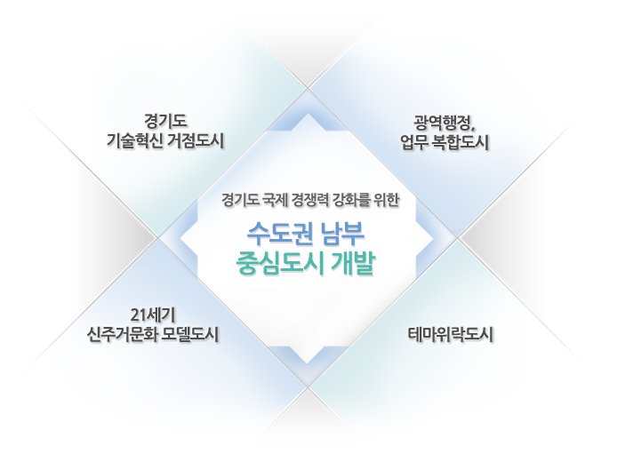

한번쯤 마음에 두었던 도시, 자연이 완성해가는 산소 도시
수원시 유시티입니다.
수원시 유시티입니다.
2016.08.09 15:00
29
비
- 통합대기환경지수
- 보통
- 오존
- 보통
- 미세먼지
- 보통
- 초미세먼지
- 보통
- 부패지수
- 좋음
- 아황산가스
- 좋음
- 이산화질소
- 좋음
- 일산화탄소
- 좋음
기본방향

- 개발목표
- 최적의 연구환경을 갖춘 핵심기술 R & D 클러스터 조성
- 산ㆍ학ㆍ연 연계를 위한 도시기반 확보
- 혁신기술의 역동적 확산을 위한 정보ㆍ교류 인프라 구축
- 레저ㆍ문화 융합형 도시공간 조성으로 미래형 여가공간 제공
- 교육환경과 주거환경이 조화를 이룬 미래형 주거생활권 모델 제시
- 고급인력 유치를 위한 직주근접의 고품격 정주공간 조성
- 수요자 중심의 수준 높은 교육환경 제공
- 종합 행정지원이 가능한 행정타운, 법조타운 조성
- 국제적인 산업비지니스 도입을 위한 업무핵 구축
- 기업의 창업ㆍ홍보ㆍ투자를 위한 지원시설 확보
- 유비쿼터스 시스템 완비로 최고의 도시정보 기반 제공
국제적 수준의 첨단기술 혁신기반 구축
경기 남부의 도시형 관광ㆍ레저 거점 조성
새로운 설계기법으로 미래형 도시문화 창출
새로운 설계기법으로 미래형 도시문화 창출
- 개발방향
- 대중교통 거점으로의 개발
- 연관기능의 보행권내 배치
- 복합용도개발(Mixed Use Development)의 적극적 도입
- 고층저밀 개발을 통한 도심 오픈스페이스 확보
- 열린학교 ㆍ 커뮤니티회랑 개념 도입
- 자연환경을 도시개발의 테마로 활용
- 전체 도시특징을 대표하는 랜드마크 및 스카이라인 형성
- 주요 도시 기능의 특화이미지 강조
- 그린플랜과 병행된 도시개발 실현
- 조성 녹지의 활용성 제고
- 수요자 특성을 고려한 주택유형 도입
- 차별화된 주거단지 조성
- 주거단지를 교육 및 학습공간의 장으로 조성
기능연계&용도복합을 통한 도시 통합
장벽없는 개방형의 열린 도시공간 창출
광교만의 도시 특징을 대표하는 장소성 부여
사람과 자연이 공생하는 녹색도시 실현
테마형 주거단지 조성으로 다양한 정주환경 제공